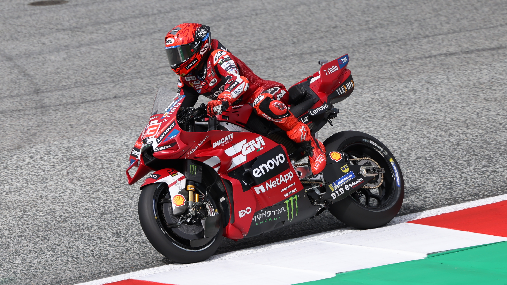

Marc Márquez é o campeão mundial de MotoGP de 2026. Neste domingo, 22 de novembro, o piloto espanhol da Ducati Lenovo confirmou o título ao terminar o Grande Prêmio de Portugal na oitava colocação, no Autódromo Internacional do Algarve, em Portimão.
A conquista veio na penúltima etapa da temporada, após um fim de semana marcado por uma queda na sprint, disputada no sábado, e uma corrida principal em que Márquez precisou administrar sua posição para garantir matematicamente o campeonato.
A vitória em Portugal ficou com Marco Bezzecchi, da Aprilia, que também havia vencido a sprint. Jorge Martín terminou em segundo, enquanto Raúl Fernández completou o pódio, garantindo uma trinca de motos Aprilia nas três primeiras posições.
Com o resultado, Márquez chegou aos 439 pontos e conquistou seu oitavo título na categoria principal, igualando a marca histórica de Giacomo Agostini.
Bezzecchi domina o fim de semana em Portimão
Marco Bezzecchi foi o principal destaque esportivo da etapa portuguesa. O italiano começou sua campanha conquistando a pole position no sábado, com o tempo de 1min37s201, estabelecendo um novo recorde de volta do circuito.
Marc Márquez garantiu o segundo lugar no grid, seguido por Fabio Di Giannantonio. Jorge Martín, um dos concorrentes ao título, classificou-se na sétima posição.
Na sprint, Bezzecchi aproveitou a largada na primeira posição e assumiu a liderança, construindo uma vantagem sobre seus adversários.
Raúl Fernández terminou em segundo lugar, enquanto Álex Márquez, irmão de Marc, completou o pódio.
A vitória foi a primeira de Bezzecchi em uma sprint na temporada de 2026 e manteve o italiano matematicamente vivo na disputa pelo campeonato.
Queda adia conquista na sprint
O sábado poderia ter encerrado antecipadamente a disputa pelo título, mas Márquez sofreu uma queda quando faltava aproximadamente uma volta e meia para o término da sprint.
O espanhol ocupava a terceira colocação, resultado que seria suficiente para confirmar matematicamente o campeonato naquele momento.
Porém, ao perder o controle da Ducati na curva 7, em condições de pista que começavam a ficar mais difíceis devido à chuva, Márquez abandonou a prova.
Jorge Martín aproveitou a oportunidade e terminou na quinta posição, reduzindo para 55 pontos sua desvantagem em relação ao líder.
Com isso, a definição do campeonato foi adiada para a corrida principal de domingo.
Resultado da sprint:
- 1º Marco Bezzecchi — Aprilia
- 2º Raúl Fernández — Trackhouse Aprilia
- 3º Álex Márquez — Gresini Ducati
- 4º Pedro Acosta — KTM
- 5º Jorge Martín — Aprilia
A etapa também confirmou o título mundial de equipes da Aprilia Racing, resultado alcançado após a sprint de sábado.
Como foi a corrida principal
A corrida de domingo começou com Marc Márquez assumindo a liderança na largada. Porém, o espanhol não conseguiu sustentar a primeira posição diante do ritmo apresentado pelos pilotos da Aprilia.
Raúl Fernández assumiu a ponta nas primeiras voltas, enquanto Jorge Martín e Marco Bezzecchi também ultrapassaram o piloto da Ducati.
Sem precisar vencer para conquistar o campeonato, Márquez passou a administrar sua posição, evitando disputas que pudessem comprometer sua chegada.
Na frente, Bezzecchi avançou sobre seus companheiros de marca e assumiu a liderança na 15ª volta. O italiano abriu vantagem e passou a controlar a corrida.
Jorge Martín também ultrapassou Fernández, garantindo a segunda colocação.
Enquanto isso, Márquez perdeu posições e chegou a ocupar o nono lugar na parte final da prova. A situação exigia atenção, pois uma nova ultrapassagem, combinada com uma eventual vitória de Martín, poderia adiar novamente a definição do título.
O espanhol conseguiu permanecer na zona necessária para ser campeão. Na última volta, a queda do brasileiro Diogo Moreira fez Márquez subir para oitavo, posição em que recebeu a bandeirada.
Bezzecchi venceu com 3s de vantagem sobre Martín. Fernández terminou em terceiro, a 5s do vencedor.
A vitória foi a sétima de Bezzecchi em corridas principais na temporada, confirmando um fim de semana de domínio do italiano em Portimão.
Confira os dez primeiros colocados da corrida principal:
- 1º Marco Bezzecchi — Aprilia
- 2º Jorge Martín — Aprilia
- 3º Raúl Fernández — Trackhouse Aprilia
- 4º Fabio Di Giannantonio — VR46 Ducati
- 5º Ai Ogura — Trackhouse Aprilia
- 6º Fermín Aldeguer — Gresini Ducati
- 7º Brad Binder — KTM
- 8º Marc Márquez — Ducati Lenovo
- 9º Luca Marini — Honda
- 10º Iker Lecuona — Ducati Lenovo
Veja os melhores momentos da corrida abaixo:
Diogo Moreira sofre queda na última volta
O brasileiro, representante da Honda LCR, teve um fim de semana de altos e baixos em Portimão.
Durante a classificação de sábado, Moreira sofreu uma forte queda entre as curvas 14 e 15, provocando a interrupção da sessão com bandeira vermelha. Apesar do acidente, o piloto não sofreu ferimentos graves e conseguiu avançar ao Q2, garantindo a 11ª posição no grid.
Na corrida principal, o brasileiro apresentou um desempenho competitivo e chegou a disputar posições entre os primeiros colocados.
Entretanto, quando se encaminhava para conquistar um resultado importante, Moreira caiu na curva 5 da última volta e abandonou a prova.
O brasileiro permanece com 78 pontos na classificação do Mundial, ocupando a 15ª colocação antes da etapa final.
Um título histórico após recuperação de 102 pontos
O campeonato de 2026 representa mais um capítulo importante na carreira de Marc Márquez.
Depois de conquistar o título mundial de 2025, o espanhol encontrou dificuldades no início desta temporada. A concorrência da Aprilia aumentou, principalmente com Marco Bezzecchi e Jorge Martín, que passaram a disputar diretamente as primeiras posições.
A campanha também foi prejudicada por problemas físicos. Após sofrer uma queda na etapa da França, Márquez passou por procedimentos cirúrgicos no pé e no ombro, ficando fora das corridas principais da França e da Catalunha.
Quando retornou ao campeonato, na Itália, o espanhol ainda estava distante dos primeiros colocados. Ao término da sétima etapa, acumulava uma desvantagem de 102 pontos para Bezzecchi.
A reação começou nas corridas seguintes.
Márquez venceu sete das 13 provas principais disputadas após seu retorno em Mugello e conseguiu reverter a diferença na classificação.
Nos registros históricos da MotoGP, nenhum piloto havia conquistado o campeonato depois de superar uma desvantagem tão grande em pontos. A marca anterior pertencia a Francesco Bagnaia, que recuperou 91 pontos em 2022.
A campanha ainda estabeleceu outros números importantes:
- Oitavo título mundial na categoria principal da MotoGP.
- Sexto título conquistado com a Honda e segundo com a Ducati.
- Primeiro piloto a conquistar três sequências distintas de títulos consecutivos na categoria principal.
- Terceiro piloto mais velho a conquistar o título da categoria principal, aos 33 anos.
O espanhol também alcançou a marca de oito títulos de Giacomo Agostini, que anteriormente ocupava sozinho o topo da lista de campeões da categoria principal.
Classificação da MotoGP 2026 após o GP de Portugal
Com uma etapa ainda por disputar, Marc Márquez não pode mais ser alcançado pelos adversários.
Confira os dez primeiros colocados do campeonato:
- 1º Marc Márquez — 439 pontos (campeão)
- 2º Jorge Martín — 396 pontos
- 3º Marco Bezzecchi — 394 pontos
- 4º Pedro Acosta — 315 pontos
- 5º Ai Ogura — 309 pontos
- 6º Fabio Di Giannantonio — 298 pontos
- 7º Raúl Fernández — 283 pontos
- 8º Álex Márquez — 204 pontos
- 9º Francesco Bagnaia — 173 pontos
- 10º Enea Bastianini — 152 pontos
A disputa pelo vice-campeonato, entretanto, segue aberta. Jorge Martín soma 396 pontos, apenas dois a mais que Marco Bezzecchi.
O italiano chega à última etapa embalado pelas vitórias na sprint e na corrida principal de Portugal, enquanto Martín tenta preservar sua segunda colocação na classificação.
A Aprilia também assumiu a liderança do Mundial de Construtores após o resultado em Portimão, mantendo outra disputa importante para a última etapa do calendário.
MotoGP encerra temporada em Valência
A temporada de 2026 será encerrada entre os dias 27 e 29 de novembro, com o Grande Prêmio da Comunidade Valenciana, no Circuito Ricardo Tormo, na Espanha.
Com o título de pilotos já definido, a última etapa terá como principais atrações a disputa pelo vice-campeonato entre Jorge Martín e Marco Bezzecchi e a definição do Mundial de Construtores.
O encerramento também marcará o fim da era das motos de 1.000 cilindradas e dos pneus Michelin, antes das mudanças técnicas previstas para 2027.
Depois de uma temporada marcada por lesões, dificuldades e uma recuperação histórica na classificação, Marc Márquez chegará a Valência com seu oitavo título da categoria principal confirmado.
O GP de Portugal encerrou a disputa pelo campeonato, mas manteve o equilíbrio entre Ducati e Aprilia em evidência. Enquanto a fabricante italiana de Borgo Panigale celebra mais uma conquista com Márquez, a equipe de Noale chega à última etapa após dominar o fim de semana em Portimão e colocar seus dois pilotos na disputa direta pelo vice-campeonato.